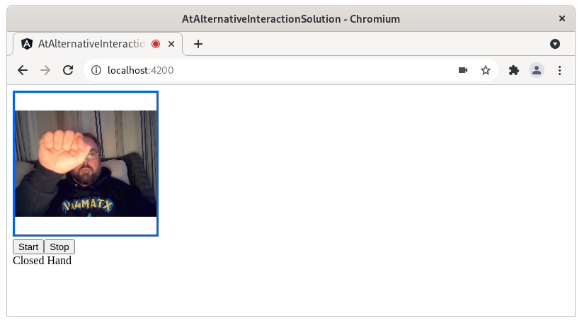

A5: Alternative Interaction¶
Overview¶
In this assignment, you will apply what you have learned about user interface development principles to build an app that makes use of an alternative form of interaction. Typical interactions with a user interface occur through mouse, keyboard, or touch input and visual output. These interactions work for most people, but certainly not all people. We talked about the importance of making these traditional interactions accessible at the beginning of the quarter, but even a fully accessible user interface can present challenges to some people. Alternative interactions that target different modalities (e.g., speech, gestures, or sonification) can expand the ways we can use software, leading to a more inclusive digital ecosystem.
This assignment will be a little bit different than what you are used so far in this class. Rather than provide you with the scaffolding of an existing project, the interface that you build will be up to you. The starter code for this project will provide you with one alternative form of interaction, but it will be up to you to decide how to use it.
This assignment may be completed in pairs (exactly two students enrolled in the class) or individually. You may choose your own partner or use Zulip to help find one. There is no grade benefit or penalty to completing the assignment individually.
Assignment Details¶
Starter code¶
A starter repository is on GitHub Classroom.
Repository Structure¶
The repository contains a fairly standard Angular web framework project. It contains a home page and one custom component that enables gestural control through a hand tracking library called Handtrack.js. Handtrack.js is a library built on top of the machine learning platform TensorFlow. We have abstracted most of the complexity with Handtrack.js into a component that emits hand gesture events detected from a webcam.
You are free to edit all files to support your program, and you are not required to use them. You can also start over and create a new project from scratch and integrate Handtrack.js however you like. To get started with the starter repository, you will first need to run:
npm install
from the command line. You may want to add variables and functions to these files, or create new subclasses. They are:
One class in the app folder:
PredictionEvent. This class contains the data that is emitted when a hand pose is detected. It currently only supports a single string description of a gesture. You may decide that you want to emit additional information, like coordinates of the gesture, if so then you will want to add them to this class.One component in the
appfolder:handtracker. This component is responsible for importing the Handtrack.js library, configuring a basic model, running the hand detection logic, and managing the camera.One component in the
appfolder:home-page. This component is demonstrates how to integrate thehandtrackercomponent into a basic Angular page, and capture gesture events.
If you plan on building upon the start repository, you will likely want to create additional components, pages, or services to build your app using ng generate. You should be familiar with these commands by now, so we will not cover them in anymore detail here.
Setting up your Workspace¶
The workspace for the starter repository will be identical to the workspace you set up for A3. Once you have installed the required modules, run:
ng serve --open
This will load up the basic user interface we have created to get you started:

Using another framework¶
As with previous assignments, it is an option to use another framework such as React Native to complete this assignment in order to pick up a new skill. While this is again an option, you are required to get approval from the course staff prior to pursuing this option. We expect to only allow grant approval for students who have used Angular, React, or another framework already.
Should you choose to use another framework, it is done with the understanding that the course staff will not support you in learning the framework or debugging your code. The course staff will not be more lenient in grading or give any extra credit for using something not covered in the course. You are required to complete the same assignment, which will likely mean adapting the provided starter code to the new framework. Should you choose this path, you are on your own.
Please include in your readme.txt any information we would need in order to run your code.
Requirements¶
Your final submission is required to have the following features:
A web app
The ability to control your app with basic gestures
The ability to control your app with custom gestures
It is up to you to decide exactly what your app does and how it implements these requirements. You will be evaluated on inclusion of these gestures as well as how well your app adheres to the user interfaces principles we have covered throughout the quarter.
Web App¶
You will create a web app using either Angular or HTML/CSS/JS (or another framework, see above). What you create for your web app is entirely up to you, but it should serve some purpose. You might, for example, decide to create a simple shopping site that allows a user to browse through unique handmade goods. Your app does not have to be feature complete, but it should be representative of the topics we have covered throughout the quarter (e.g., accessible, responsive, good user experience). We are looking to see an app that is roughly on par with the work you have completed in assignments 1-4. So a good rule of thumb for determining the feature set of your app is to compare it to the functionality that you enabled in those assignments.
If you are unsure about what to create, you are welcome to adapt any of your previous work in this class for this assignment. However, if you do, you must extend it in some new and interesting way. So for example, if you choose to build on your work in assignment 4, we would expect to see that you either added a new page or reworked the overall layout and design. Feel free to reach out to course staff to get feedback on your plan.
Basic Gestures¶
Your app must make use of at least five of the common gestures that have already been created in the starter code:
Open Hand
Two Open Hands
Closed Hand
Two Closed Hands
Hand Pointing
Two Hands Pointing
Hand Pinching
Two Hands Pinching
How you use these gestures will depend on the app that you decide to build. For example, in a music player app you might bind the Open Hand gesture event to a pause playback function. You are free to assign a gesture to any action that you want, but your reasoning should make sense.
Custom Gestures¶
In addition to the basic gestures that have been provided to you in the starter code, you must implement at least two new gestures and use them in your app. There are a couple of ways to think about creating new gestures. You will notice that the basic gesture set does not accommodate mixed gestures. So, one approach to creating a new gesture might be to mix one open and one closed hand, for example. You will also notice that in the runDetection method of the handtracker component, a console.log output is commented out. If you uncomment this log output and view the data, you will notice that it is possible to access positional data along with each detected hand gesture. With a little bit of math you should be able to detect if a hand is ‘swiping’ in a particular direction.
Once again, the type of custom gestures you implement is up to you. So think about what types of gestures would clearly map to a particular function in your app and see what you can come up with!
Readme¶
Please update your readme.txt with how long the assignment took, who or what online resources you consulted with, any bonus features you added, and anything else we should know. If the assignment was completed in a pair, the readme should list names/emails/ids of both students. Only one submission needs to be made, however.
The readme for this assignment is critical, as it provides you an opportunity to explain why you made your design choices for each gesture. We expect to see some thought applied here. Your gestures should not just be randome associations with app function so that you can complete the assignment! Office hours are a great opportunity to get feedback on your design choices, and your assignment will be in part evaluated on how well they align with good principles of design. If you ran out of time or struggled to implement something, feel free to use the readme to describe what you intended to implement or what you struggled with.
Demo¶
Please record a demo video (demo.mp4 or a different file extension) which shows the demo features of your app: what your app does, and how each basic and custom gesture controls your app. This video does not need to be polished. It is intended to help us understand the interface you have designed or developed and how it operates, but it’s not intended to be a marketing pitch. Since you are making use of a webcam in this video, you might consider using your phone to record as you use gestures to control your app. We expect most videos can be 1 minute or less.
Submitting¶
To submit, zip your repository and upload it to Canvas. As with A3 and A4, your project might get quite large. So if you do use Angular, please remove the node_modules folder prior to zipping.
Grading¶
This assignment will be graded on a scale of 25 points, broken down as follows:
A functional web app (10 point)
The ability to control the web app with basic gestures (5 points, 1 per gesture)
The ability to control the web app with custom gestures (4 points)
Following good principles of UI design (2 points)
Creating a compelling app (2 points)
A readme and demo video which explains how these features were implemented and their design rationale (2 point)
In prior courses, you’ve been asked to follow good principles for indentation, naming variables, commenting, etc. We expect you to do the same in this course, but aim to avoid being draconian in our enforcement of these principles. Egregiously poor formatting, completely uncommented code, etc. may incur a small penalty (e.g., -1 point), but we expect this to be rarely applied.